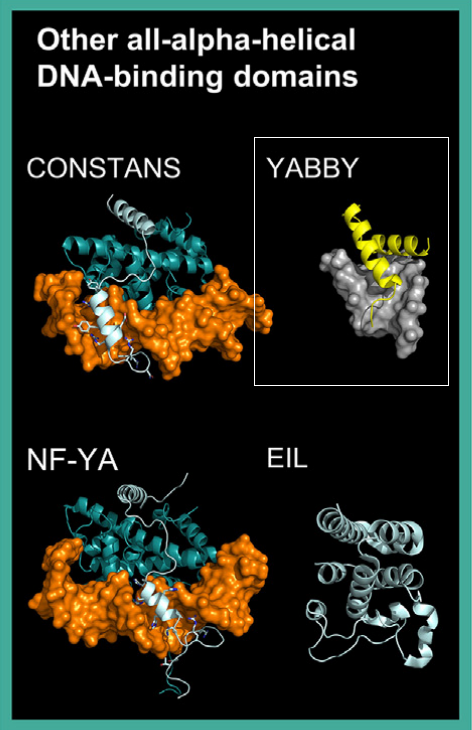

The All-Alpha-Helical DBDs superclass includes transcription factors (TFs) whose DNA-binding domains (DBDs) are composed exclusively of alpha-helices. Unlike other alpha-helical DBDs (such as HTH or basic domains), these TFs exhibit distinct structural and DNA-binding characteristics. This superclass comprises three classes: Heteromeric CCAAT-Binding Factors, HMG Domain Factors, and EIL (Ethylene-Insensitive3-Like) Factors.

HMG (High-Mobility Group) domain factors are a diverse group of proteins found in all eukaryotes. They bind DNA via an HMG-box domain,
which forms an L-shaped structure composed of three alpha-helices. Unlike HTH domains, HMG factors bind the DNA minor groove,
causing DNA bending at approximately 90°
Plant HMG-box proteins are less diverse than their mammalian counterparts and often exhibit transcriptional activity through domains
other than the HMG box (e.g., AT-hook or ARID domains)
[src].
The YABBY family (absent in mammals) is classified within the HMG domain factors. YABBY proteins contain two conserved domains:
Structural predictions show that the YABBY domain aligns well with the N-terminal helices of the HMG domain of SRY (PDB: 1HRY) (39 equivalent positions, rmsd = 2.01 Å). While the zinc finger domain may contribute to DNA binding, experiments on the CRABS CLAW protein suggest a more prominent role for the YABBY domain [src] [src] [src].